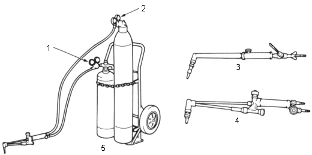
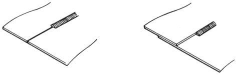

Welding Methods
|
2-20 |
Gas welding is indispensable for body repair because of the broad range of its applications to join the body panels, cut the materials that construct the body, apply heat to reform panels, and also because it is easy to get hold of the tools.
However, this method requires experience.
Welders:
 |
|
Welding Methods:
| Butt welding | Fillet welding or soldering |
